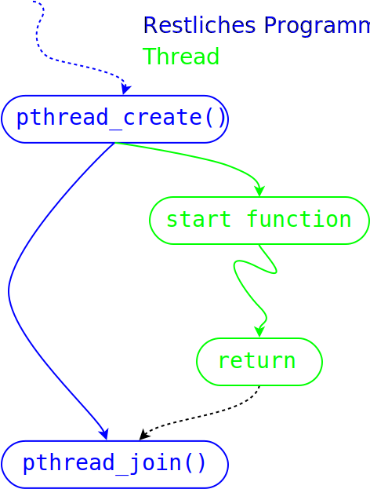

Thread Life Cycle¶
Thread Life Cycle¶
No parent/child relationship ⟶ anybody can join |
 |
Thread Creation¶
int pthread_create(
pthread_t *thread, const pthread_attr_t *attr,
void *(*start_routine) (void *), void *arg);
thread: ID of the new thread (output parameter)attr⟶ see later (NULL⟶ default attribute)start_routine: thread start function,void*/void*arg: parameter of the start function
Thread Termination (1)¶
Thread termination alternatives:
Return from start function
pthread_exit()from somewhere inside the thread (cf.exit()from a process)pthread_cancel()from outside (cf.kill())exit()of the entire process ⟶ all contained threads are terminated
Danger
Don’t use pthread_cancel() unless you know what you are doing!
Thread Termination (2)¶
Without any further ado: the manual …
void pthread_exit(void *retval);
int pthread_cancel(pthread_t thread);
Exit Status, pthread_join()¶
A thread’s “exit status”:
void*, just like the start parameter ⟶ more flexible than a process’sint.Parameter to
pthread_exit()Return type of the start function
int pthread_join(pthread_t thread, void **retval);
Detached Threads¶
Sometimes one does not want to use pthread_join()
Rather, run a thread in the “background”.
“Detached” thread
int pthread_attr_setdetachstate(
pthread_attr_t *attr, int detachstate);
PTHREAD_CREATE_DETACHED
Threads that are created using attr will be created in a
detached state.
Detaching at runtime …
int pthread_detach(pthread_t thread);
Thread ID¶
pthread_create()returnspthread_tto the callerThread ID of calling thread:
pthread_self()Compare using
pthread_equal()
pthread_t pthread_self(void);
int pthread_equal(pthread_t t1, pthread_t t2);
Scheduled Entities (1)¶
Kernel maintains scheduled entities (Process IDs, “1:1 scheduling”)
firefox¶$ ps -eLf|grep firefox
$ ls -1 /proc/30650/task/
13960
13961
... (many more) ...
Scheduled Entities (2)¶
Too bad:
Scheduled entity’s ID is not the same as
pthread_tCorrelation of OS threads and POSIX thread is Linux specific
pid_t gettid(void);